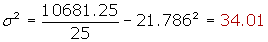
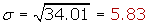
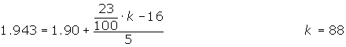

Standard Deviation Problems
1Find the standard deviation for the following data series:
12, 6, 7, 3, 15, 10, 18, 5.
2Find the standard deviation for the following series of numbers:
2, 3, 6, 8, 11.
12, 6, 7, 3, 15, 10, 18, 5.
3Find the standard deviation for the series:
3, 5, 2, 7, 6, 4, 9.
3, 5, 2, 7, 6, 4, 9, 1.
4Given the statistical distribution of the table.
| xi | 61 | 64 | 67 | 70 | 73 |
| fi | 5 | 18 | 42 | 27 | 8 |
Calculate the standard deviation.
5A statistical distribution is given by the following table:
| [10, 15) | [15, 20) | [20, 25) | [25, 30) | [30, 35) | |
| fi | 3 | 5 | 7 | 4 | 2 |
Calculate the standard deviation.
6The heights of the players (in centimeters) from a basketball team are represented by the table:
| Height | [170, 175) | [175, 180) | [180, 185) | [185, 190) | [190, 195) | [195, 2.00) |
| No. of players | 1 | 3 | 4 | 8 | 5 | 2 |
Calculate:
1. The standard deviation.
2. How many players are above the mean plus one standard deviation?
7Given the absolute cumulative frequency table:
| Age | Fi |
| [0, 2) | 4 |
| [2, 4) | 11 |
| [4, 6) | 24 |
| [6, 8) | 34 |
| [8, 10) | 40 |
Calculate the standard deviation.
1
Find the standard deviation for the following data series:
12, 6, 7, 3, 15, 10, 18, 5.


2
Find the standard deviation for the following series of numbers:
2, 3, 6, 8, 11.
Standard Deviation
12, 6, 7, 3, 15, 10, 18, 5.

Standard Deviation
3
Find the standard deviation for the series:
3, 5, 2, 7, 6, 4, 9.
Standard Deviation
3, 5, 2, 7, 6, 4, 9, 1.
Standard Deviation

4
Given the statistical distribution of the table.
| xi | 61 | 64 | 67 | 70 | 73 |
| fi | 5 | 18 | 42 | 27 | 8 |
Calculate standard deviation.
| xi | fi | xi · fi | xi2 · fi |
| 61 | 5 | 305 | 18 065 |
| 64 | 18 | 1152 | 73 728 |
| 67 | 42 | 2814 | 188 538 |
| 71 | 27 | 1890 | 132 300 |
| 73 | 8 | 584 | 42 632 |
| 100 | 6745 | 455 803 |

Standard Deviation
5
A statistical distribution is given by the following table:
| [10, 15) | [15, 20) | [20, 25) | [25, 30) | [30, 35) | |
| fi | 3 | 5 | 7 | 4 | 2 |
Calculate the standard deviation.
| xi | fi | xi · fi | xi2 · fi | |
| [10, 15) | 12.5 | 3 | 37.5 | 468.75 |
| [15, 20) | 17.5 | 5 | 87.5 | 1537.3 |
| [20, 25) | 22.5 | 7 | 157.5 | 3543.8 |
| [25, 30) | 27.5 | 4 | 110 | 3025 |
| [30, 35) | 32.5 | 2 | 65 | 2112.5 |
| 21 | 457.5 | 10681.25 |


Standard Deviation

6
The heights of the players (in centimeters) from a basketball team are represented by the table:
| Height | [170, 175) | [175, 180) | [180, 185) | [185, 190) | [190, 195) | [195, 2.00) |
| No. of players | 1 | 3 | 4 | 8 | 5 | 2 |
Calculate:
3. The standard deviation.
4. How many players are above the mean plus one standard deviation?
| xi | fi | Fi | xi · fi | xi2 · fi | |
| [1.70, 1.75) | 1.725 | 1 | 1 | 1.725 | 2.976 |
| [1.75, 1.80) | 1.775 | 3 | 4 | 5.325 | 9.453 |
| [1.80, 1.85) | 1.825 | 4 | 8 | 7.3 | 13.324 |
| [1.85, 1.90) | 1.875 | 8 | 16 | 15 | 28.128 |
| [1.90, 1.95) | 1.925 | 5 | 21 | 9.625 | 18.53 |
| [1.95, 2.00) | 1.975 | 2 | 23 | 3.95 | 7.802 |
| 23 | 42.925 | 80.213 |

1

2
x + σ = 1.866+ 0.077 = 1.943
This value belongs to a percentile that is in the penultimate interval.


There are only 3 players above x + σ.
7
Given the absolute cumulative frequency table:
| Edad | Fi |
| [0, 2) | 4 |
| [2, 4) | 11 |
| [4, 6) | 24 |
| [6, 8) | 34 |
| [8, 10) | 40 |
1. Calculate the arithmetic mean and standard deviation.
2. Calculate the difference between the values that are the 10 central ages?
3. Create the respective absolute cumulative frequency polygon.
| xi | fi | Fi | xi · fi | xi2 · fi | |
| [0, 2) | 1 | 4 | 4 | 4 | 4 |
| [2, 4) | 3 | 7 | 11 | 21 | 63 |
| [4, 6) | 5 | 13 | 24 | 65 | 325 |
| [6, 8) | 7 | 10 | 34 | 70 | 490 |
| [8, 10) | 9 | 6 | 40 | 54 | 486 |
| 40 | 214 | 1368 |